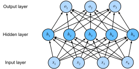

5.1. 多层感知机¶
在 4.1节 中，我们介绍了 softmax 回归，既从零实现了该算法 （4.4节），也使用了高层 API （4.5节）。这使我们能够 训练出从低分辨率图像中识别 10 类服装的分类器。 在此过程中，我们学会了如何整理数据、 把输出强制转换为一个合法的概率分布、 应用合适的损失函数， 并针对模型参数最小化该损失函数。 现在，我们已经在简单线性模型的背景下 掌握了这些机理， 就可以开始探索深度神经网络了—— 这正是本书主要关注的那类相对丰富的模型。
%matplotlib inline
import torch
from d2l import torch as d2l
%matplotlib inline
from mxnet import autograd, np, npx
from d2l import mxnet as d2l
npx.set_np()
%matplotlib inline
import jax
from jax import grad
from jax import numpy as jnp
from jax import vmap
from d2l import jax as d2l
%matplotlib inline
import tensorflow as tf
from d2l import tensorflow as d2l
5.1.1. 隐藏层¶
我们在 3.1.1.1节 中把仿射变换 描述为带偏置的线性变换。 首先，回想一下与我们的 softmax 回归示例 相对应的模型架构， 如 图4.1.1 所示。 该模型通过单个仿射变换 把输入直接映射到输出， 随后再接一个 softmax 运算。 如果我们的标签确实通过一个简单的仿射变换 与输入数据相关联， 那么这种方法就足够了。 然而，（仿射变换中的）线性性是一个很强的假设。
5.1.1.1. 线性模型的局限¶
例如，线性性蕴含了更弱的 单调性假设，即： 特征的任何增加都必须 要么总是导致模型输出的增加 （如果相应的权重为正）， 要么总是导致模型输出的减少 （如果相应的权重为负）。 有时这是有道理的。 例如，如果我们想预测 一个人是否会偿还贷款， 我们也许可以合理假设：在其他条件相同的前提下， 收入更高的申请人 总是比收入更低的申请人更有可能还款。 尽管这种关系是单调的，但它很可能 并不与还款概率线性相关。 收入从 $0 增加到 $50,000， 很可能比从 100 万美元增加到 105 万美元 对应着更大的还款可能性提升。 处理这个问题的一种方式，是对结果进行后处理， 使线性性变得更合理， 比如使用 logistic 映射（因而使用结果概率的对数）。
注意，我们很容易举出违反单调性的例子。 例如，假设我们想根据体温来预测健康状况。 对于体温高于 37°C（98.6°F）的正常个体， 体温越高意味着风险越大。 然而，如果体温降到 37°C 以下，体温越低反而意味着风险越大！ 同样，我们也许可以用一些巧妙的预处理 来解决这个问题，例如把与 37°C 的距离作为一个特征。
但是，对猫和狗的图片进行分类又当如何呢？ 增大位置 (13, 17) 处像素的强度， 是否应当总是增大（或总是减小） 图像描绘的是狗的可能性呢？ 依赖线性模型相当于隐含地假设： 区分猫和狗所唯一需要做的， 就是评估各个像素的亮度。 在一个把图像反转过来仍不改变类别的世界里， 这种方法注定要失败。
然而，尽管与前面的例子相比， 这里的线性性显得荒谬， 但用简单的预处理来修正这个问题并不那么显然。 这是因为任何像素的重要性 都以复杂的方式取决于其上下文 （周围像素的取值）。 也许存在一种数据的表示， 它能考虑到特征之间相关的相互作用， 在此基础上线性模型就能适用， 但我们根本不知道如何手工计算出这种表示。 借助深度神经网络，我们可以利用观测数据 通过隐藏层联合学习一种表示， 以及作用于该表示的线性预测器。
这个非线性问题至少已经被研究了一个 世纪 (Fisher, 1925)。例如，最基本形式的决策树 使用一系列二元决策来 判定类别归属 (Quinlan, 1993)。同样， 核方法几十年来一直被用于对非线性依赖关系建模 (Aronszajn, 1950)。这些思想后来进入 非参数样条模型 (Wahba, 1990) 和核方法 (Schölkopf and Smola, 2002)。这也是大脑 能够相当自然地解决的问题。毕竟， 神经元向其他神经元馈送信号，而后者 又反过来向再一些神经元馈送信号 (Ramón y Cajal and Azoulay, 1894)。 因此，我们得到了一系列相对简单的变换。
5.1.1.2. 引入隐藏层¶
我们可以通过引入一个或多个隐藏层 来克服线性模型的局限。 最简单的做法是把 许多全连接层依次堆叠起来。 每一层都馈入其上一层， 直到我们生成输出。 我们可以把前 \(L-1\) 层 看作我们的表示，把最后一层 看作我们的线性预测器。 这种架构通常称为 多层感知机（multilayer perceptron）， 常缩写为 MLP（图5.1.1）。

图5.1.1 一个带五个隐藏单元隐藏层的 MLP。¶
这个 MLP 有四个输入、三个输出， 其隐藏层包含五个隐藏单元。 由于输入层不涉及任何计算， 用这个网络产生输出 需要实现隐藏层和输出层 两部分的计算； 因此，这个 MLP 的层数是两层。 注意这两层都是全连接的。 每个输入都影响隐藏层中的每个神经元， 而隐藏层中的每个神经元又反过来影响 输出层中的每个神经元。唉，我们还没有 完全讲完。
5.1.1.3. 从线性到非线性¶
和之前一样，我们用矩阵 \(\mathbf{X} \in \mathbb{R}^{n \times d}\) 表示一个由 \(n\) 个样例组成的小批量，其中每个样例有 \(d\) 个输入（特征）。 对于一个隐藏层含 \(h\) 个隐藏单元的单隐藏层 MLP， 我们用 \(\mathbf{H} \in \mathbb{R}^{n \times h}\) 表示隐藏层的输出，即 隐藏表示（hidden representation）。 由于隐藏层和输出层都是全连接的， 我们有隐藏层权重 \(\mathbf{W}^{(1)} \in \mathbb{R}^{d \times h}\) 和偏置 \(\mathbf{b}^{(1)} \in \mathbb{R}^{1 \times h}\)， 以及输出层权重 \(\mathbf{W}^{(2)} \in \mathbb{R}^{h \times q}\) 和偏置 \(\mathbf{b}^{(2)} \in \mathbb{R}^{1 \times q}\)。 这使我们能够如下计算单隐藏层 MLP 的 输出 \(\mathbf{O} \in \mathbb{R}^{n \times q}\)：
注意，加入隐藏层之后， 我们的模型现在需要我们跟踪并更新 额外的参数集。 那么，我们换来了什么呢？ 你可能会惊讶地发现， 在上述定义的模型中，我们费了这么大劲却一无所获！ 原因很简单。 上面的隐藏单元是输入的 仿射函数， 而输出（softmax 之前）只是 隐藏单元的仿射函数。 仿射函数的仿射函数 仍然是仿射函数。 此外，我们的线性模型本来就已经 能够表示任何仿射函数。
为了正式地看到这一点，我们只需把上面定义中的隐藏层折叠掉， 得到一个等价的单层模型，其参数为 \(\mathbf{W} = \mathbf{W}^{(1)}\mathbf{W}^{(2)}\) 和 \(\mathbf{b} = \mathbf{b}^{(1)} \mathbf{W}^{(2)} + \mathbf{b}^{(2)}\)：
为了发挥多层架构的潜力， 我们还需要一个关键要素： 一个非线性激活函数（activation function）\(\sigma\)， 在仿射变换之后作用于每个隐藏单元。例如， 一个流行的选择是 ReLU（rectified linear unit，修正线性单元）激活函数 (Nair and Hinton, 2010) \(\sigma(x) = \mathrm{max}(0, x)\)，它按元素作用于其参数。 激活函数 \(\sigma(\cdot)\) 的输出称为激活（activation）。 一般来说，有了激活函数之后， 我们就不再可能把 MLP 折叠成一个线性模型：
由于 \(\mathbf{X}\) 中的每一行对应小批量中的一个样例， （这里稍微滥用一下记号）我们定义非线性 \(\sigma\) 以逐行的方式作用于其输入， 即一次一个样例。 注意，当我们在 4.1.1.3节 中 表示逐行运算时，softmax 也使用了同样的记号。 我们常用的激活函数往往不仅作用于逐行，而且 按元素作用。这意味着，在计算完该层的线性部分之后， 我们可以分别计算每个激活值， 而不必查看其他隐藏单元的取值。
为了构建更一般的 MLP，我们可以继续堆叠 这样的隐藏层， 例如 \(\mathbf{H}^{(1)} = \sigma_1(\mathbf{X} \mathbf{W}^{(1)} + \mathbf{b}^{(1)})\)、 \(\mathbf{H}^{(2)} = \sigma_2(\mathbf{H}^{(1)} \mathbf{W}^{(2)} + \mathbf{b}^{(2)})\)， 一层叠一层，从而得到表达能力越来越强的模型。
5.1.1.4. 通用近似器¶
我们知道，人脑能够进行非常复杂的统计分析。因此， 值得一问：深度网络究竟可以有多强大。这个问题 已经被多次回答，例如，Cybenko (1989) 在 MLP 的背景下给出了回答，而 Micchelli (1984) 则在再生核 希尔伯特空间的背景下给出了一种可以看作单隐藏层径向基函数（RBF）网络的回答。 这些结果（以及相关结果）表明，即便是单隐藏层网络， 只要节点足够多（可能是多得离谱的多）， 并且权重集合合适， 我们就能对任何函数建模。 不过，真正学习到这个函数才是困难的部分。 你也许可以把你的神经网络 想象得有点像 C 编程语言。 与任何其他现代语言一样， 这门语言能够表达任何可计算的程序。 但真正给出一个符合你规格说明的程序 才是困难的部分。
此外，单隐藏层网络能够学习任何函数， 并不意味着你应当试图 用一个这样的网络来解决你所有的问题。事实上，在这种情况下核方法 要有效得多，因为它们即使在无限维空间中也能够 精确地解决该问题 (Kimeldorf and Wahba, 1971, Schölkopf et al., 2001)。 事实上，使用更深（而不是更宽）的网络，我们可以 更为紧凑地近似许多函数 (Simonyan and Zisserman, 2014)。 我们将在后续章节中讨论更严格的论证。
5.1.2. 激活函数¶
激活函数通过计算加权和并在此基础上加上偏置， 来决定一个神经元是否应当被激活。 它们是用于把输入信号变换为输出的可微运算符， 且其中大多数会引入非线性。 由于激活函数是深度学习的基础， 下面我们简要考察一些常见的激活函数。
5.1.2.1. ReLU 函数¶
最流行的选择是修正线性单元（ReLU）:cite:Nair.Hinton.2010， 这既因为实现简单， 也因为它在各种预测任务上表现良好。 ReLU 提供了一种非常简单的非线性变换。 给定一个元素 \(x\)，该函数定义为 该元素与 \(0\) 二者中的最大值：
非正式地说，ReLU 函数只保留正的元素， 而把所有负的元素对应的激活值都设为 0 从而丢弃它们。 为了获得一些直观认识，我们可以画出这个函数。 如你所见，该激活函数是分段线性的。
x = torch.arange(-8.0, 8.0, 0.1, requires_grad=True)
y = torch.relu(x)
d2l.plot(x.detach(), y.detach(), 'x', 'relu(x)', figsize=(5, 2.5))
x = np.arange(-8.0, 8.0, 0.1)
x.attach_grad()
with autograd.record():
y = npx.relu(x)
d2l.plot(x, y, 'x', 'relu(x)', figsize=(5, 2.5))
x = jnp.arange(-8.0, 8.0, 0.1)
y = jax.nn.relu(x)
d2l.plot(x, y, 'x', 'relu(x)', figsize=(5, 2.5))
x = tf.Variable(tf.range(-8.0, 8.0, 0.1), dtype=tf.float32)
y = tf.nn.relu(x)
d2l.plot(x.numpy(), y.numpy(), 'x', 'relu(x)', figsize=(5, 2.5))
当输入为负时， ReLU 函数的导数为 0， 而当输入为正时， ReLU 函数的导数为 1。 注意，当输入取值恰好等于 0 时， ReLU 函数不可微。 在这些情况下，我们默认取左导数， 即认为输入为 0 时导数为 0。 我们可以这样做，是因为 输入实际上可能永远不会恰好为零（数学家 会说它在零测集上是不可微的）。 有句老话说，如果微妙的边界条件很重要， 我们很可能是在做（真正的）数学，而不是工程。 这条传统智慧也许适用于此，或者至少，适用于这个事实： 我们做的并不是约束优化 (Mangasarian, 1965, Rockafellar, 1970)。 下面我们画出 ReLU 函数的导数。
y.backward(torch.ones_like(x), retain_graph=True)
d2l.plot(x.detach(), x.grad, 'x', 'grad of relu', figsize=(5, 2.5))
y.backward()
d2l.plot(x, x.grad, 'x', 'grad of relu', figsize=(5, 2.5))
grad_relu = vmap(grad(jax.nn.relu))
d2l.plot(x, grad_relu(x), 'x', 'grad of relu', figsize=(5, 2.5))
with tf.GradientTape() as t:
y = tf.nn.relu(x)
d2l.plot(x.numpy(), t.gradient(y, x).numpy(), 'x', 'grad of relu',
figsize=(5, 2.5))
使用 ReLU 的原因是它的导数表现特别好： 它们要么消失，要么就让参数原样通过。 这使得优化表现得更好， 并且缓解了曾困扰早期神经网络版本的、 有充分文献记载的梯度消失问题（后文还会详细讨论）。
注意，ReLU 函数有许多变体， 包括参数化 ReLU（pReLU）函数 (He et al., 2015)。 这一变体为 ReLU 增加了一个线性项， 因此即使参数为负，也仍有一些信息可以通过：
5.1.2.2. Sigmoid 函数¶
sigmoid 函数把那些取值位于定义域 \(\mathbb{R}\) 中的输入 变换为取值落在区间 (0, 1) 上的输出。 因此，sigmoid 函数 常被称为挤压函数（squashing function）： 它把 (-inf, inf) 范围内的任何输入 挤压到 (0, 1) 范围内的某个值：
在最早的神经网络中，科学家们 感兴趣的是对激活或不激活的生物神经元建模。 因此，这一领域的先驱们—— 可以一直追溯到人工神经元的发明者 McCulloch 和 Pitts—— 专注于阈值单元 (McCulloch and Pitts, 1943)。 阈值激活在其输入低于某个阈值时 取值为 0， 而在输入超过该阈值时取值为 1。
当注意力转向基于梯度的学习时， sigmoid 函数是一个自然的选择， 因为它是阈值单元的一个平滑、可微的 近似。 当我们在二元分类问题中想把输出解释为概率时， sigmoid 仍然被广泛用作输出单元上的 激活函数：你可以把 sigmoid 看作 softmax 的一个特例。 然而，在隐藏层的大多数用途中，sigmoid 已在很大程度上 被更简单、也更容易训练的 ReLU 所取代。 这在很大程度上是因为 sigmoid 给优化带来了挑战 (LeCun et al., 1998)，因为当参数为大的正数或负数时，它的梯度会消失。 这可能导致难以逃离的平台区。 尽管如此，sigmoid 仍然很重要。在后续关于循环神经网络的章节中（例如 10.1节）， 我们将描述利用 sigmoid 单元来控制信息跨时间流动的架构。
下面我们画出 sigmoid 函数。 注意，当输入接近 0 时， sigmoid 函数近似于 一个线性变换。
y = torch.sigmoid(x)
d2l.plot(x.detach(), y.detach(), 'x', 'sigmoid(x)', figsize=(5, 2.5))
with autograd.record():
y = npx.sigmoid(x)
d2l.plot(x, y, 'x', 'sigmoid(x)', figsize=(5, 2.5))
y = jax.nn.sigmoid(x)
d2l.plot(x, y, 'x', 'sigmoid(x)', figsize=(5, 2.5))
y = tf.nn.sigmoid(x)
d2l.plot(x.numpy(), y.numpy(), 'x', 'sigmoid(x)', figsize=(5, 2.5))
sigmoid 函数的导数由下式给出：
sigmoid 函数的导数如下图所示。 注意，当输入为 0 时， sigmoid 函数的导数 达到最大值 0.25。 当输入向任一方向偏离 0 时， 导数都趋近于 0。
# Clear out previous gradients
x.grad.data.zero_()
y.backward(torch.ones_like(x),retain_graph=True)
d2l.plot(x.detach(), x.grad, 'x', 'grad of sigmoid', figsize=(5, 2.5))
y.backward()
d2l.plot(x, x.grad, 'x', 'grad of sigmoid', figsize=(5, 2.5))
grad_sigmoid = vmap(grad(jax.nn.sigmoid))
d2l.plot(x, grad_sigmoid(x), 'x', 'grad of sigmoid', figsize=(5, 2.5))
with tf.GradientTape() as t:
y = tf.nn.sigmoid(x)
d2l.plot(x.numpy(), t.gradient(y, x).numpy(), 'x', 'grad of sigmoid',
figsize=(5, 2.5))
5.1.2.3. Tanh 函数¶
与 sigmoid 函数一样，tanh（双曲正切） 函数也会挤压它的输入， 把它们变换为取值在\(-1\) 与 \(1\) 之间的元素：
下面我们画出 tanh 函数。注意，当输入接近 0 时，tanh 函数近似于一个线性变换。尽管该函数的形状与 sigmoid 函数相似，但 tanh 函数关于坐标原点具有点对称性 (Kalman and Kwasny, 1992)。
y = torch.tanh(x)
d2l.plot(x.detach(), y.detach(), 'x', 'tanh(x)', figsize=(5, 2.5))
with autograd.record():
y = np.tanh(x)
d2l.plot(x, y, 'x', 'tanh(x)', figsize=(5, 2.5))
y = jax.nn.tanh(x)
d2l.plot(x, y, 'x', 'tanh(x)', figsize=(5, 2.5))
y = tf.nn.tanh(x)
d2l.plot(x.numpy(), y.numpy(), 'x', 'tanh(x)', figsize=(5, 2.5))
tanh 函数的导数为：
其图像如下所示。 当输入接近 0 时， tanh 函数的导数趋近于最大值 1。 而正如我们在 sigmoid 函数那里所见到的， 当输入向任一方向远离 0 时， tanh 函数的导数都趋近于 0。
# Clear out previous gradients
x.grad.data.zero_()
y.backward(torch.ones_like(x),retain_graph=True)
d2l.plot(x.detach(), x.grad, 'x', 'grad of tanh', figsize=(5, 2.5))
y.backward()
d2l.plot(x, x.grad, 'x', 'grad of tanh', figsize=(5, 2.5))
grad_tanh = vmap(grad(jax.nn.tanh))
d2l.plot(x, grad_tanh(x), 'x', 'grad of tanh', figsize=(5, 2.5))
with tf.GradientTape() as t:
y = tf.nn.tanh(x)
d2l.plot(x.numpy(), t.gradient(y, x).numpy(), 'x', 'grad of tanh',
figsize=(5, 2.5))
5.1.3. 小结与讨论¶
我们现在已经知道如何引入非线性 来构建表达能力强的多层神经网络架构。 顺便说一句，你的知识已经 让你掌握了与大约 1990 年的实践者 类似的一套工具。 在某些方面，你比当时工作的任何人 都有优势， 因为你可以利用强大的 开源深度学习框架， 只用几行代码就能快速构建模型。 以前，训练这些网络 需要研究者用 C、Fortran 甚至 Lisp（就 LeNet 而言）显式地 编写层和导数的代码。
第二个好处是，ReLU 比 sigmoid 或 tanh 函数 显著地更适合优化。有人可能会说， 这是过去十年间帮助深度学习复兴的关键创新之一。 不过要注意，关于激活函数的研究并没有停止。 例如， Hendrycks and Gimpel (2016) 提出的 GELU（Gaussian error linear unit，高斯误差线性单元） 激活函数 \(x \Phi(x)\)（其中 \(\Phi(x)\) 是标准高斯累积分布函数） 以及 Ramachandran et al. (2017) 中提出的 Swish 激活 函数 \(\sigma(x) = x \operatorname{sigmoid}(\beta x)\)， 在很多情况下都能带来更好的准确率。
5.1.4. 练习¶
证明：向一个线性深度网络（即不含 非线性 \(\sigma\) 的网络）添加层，永远不会增强该网络的表达能力。 举一个它实际上反而会削弱表达能力的例子。
计算 pReLU 激活函数的导数。
计算 Swish 激活函数 \(x \operatorname{sigmoid}(\beta x)\) 的导数。
证明：只使用 ReLU（或 pReLU）的 MLP 构造出的是 连续的分段线性函数。
Sigmoid 与 tanh 非常相似。
证明 \(\operatorname{tanh}(x) + 1 = 2 \operatorname{sigmoid}(2x)\)。
证明由这两种非线性所参数化的函数类是相同的。提示：仿射层也带有偏置项。
假设我们有一个一次作用于一个小批量的非线性，例如批量规范化 (Ioffe and Szegedy, 2015)。你预计这会带来哪些问题？
举一个 sigmoid 激活函数梯度消失的例子。